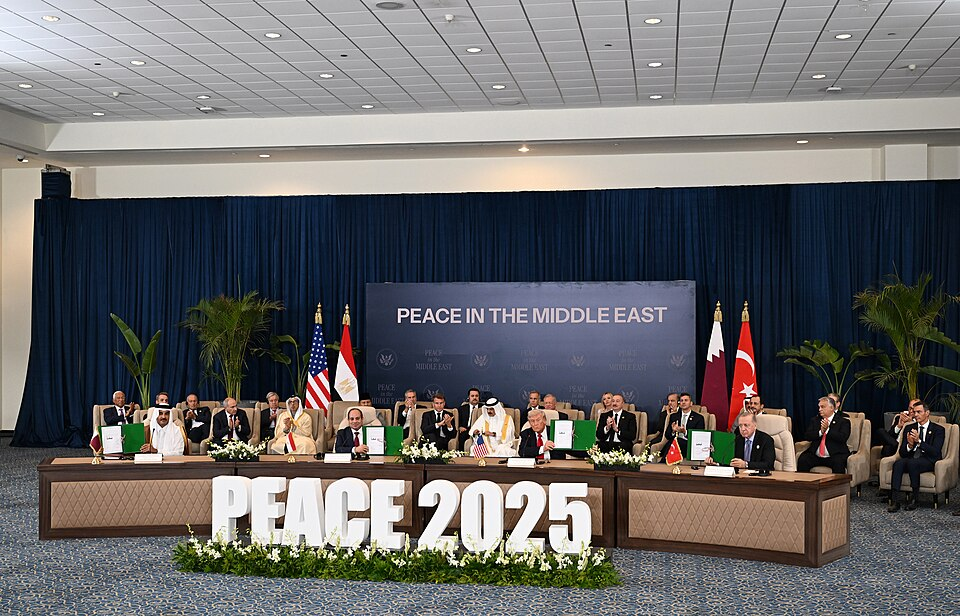

卷·07 · 第二任期 · 连载进行中第 47 任：未完待续
2025-01-20 起笔，至今未完。本卷与其他各卷不同：它没有结尾——事实陈列、争议双写，时间线滚动到哪儿，就画到哪儿。
这是九卷里唯一一卷"活着的卷"。本刊对它的纪律比对任何一卷都严：每一段落落笔前逐条联网核实；成绩如实记，代价如实记；支持者与批评者的说法各占一行。事实核验基准日为 2026-10-03；2026-10-04 增补轮新增第一手锚点与幕间快照；2026-10-05 时事快照轮完成加沙、伊朗、中期选情三条易变线的全量复核——伊朗线据新核验修订（停火 7 月破裂，见第四幕），加沙线补入最新进展，其余既有表述复核无变化；2026-10-05 快照②补入加沙重建计划与哈马斯解除武装协议新进展；2026-10-06 快照③完成加沙/俄乌/关税/人事/民调五线全量复核（结论与细节见下方快照③面板——关税替代授权细节、俄乌三边提议与人质后加沙现状为新落定信息，各幕既有表述复核无失准）。此后的进展，留给下一版印刷。

2025 年 1 月 20 日，就职当天签署 26 项行政令——雇佣冻结、边境、出生公民权、教育部，一天之内重写规则手册。整个 2025 年他共签 225 项行政令，为罗斯福以来单年之最。政府效率部（DOGE）由马斯克挂帅，百日之内横扫联邦机构；春夏之交马斯克退场，与总统的关系从盟友变成对骂。
边境与移民是执行最狠的一条线：DHS 称 2025 年执行驱逐超过 60.5 万人，白宫另称约 190 万人"自行离境"。双写：支持者说兑现了竞选承诺；批评者记录下个别合法居民被误拘的案例与庇护城市的对峙。
2025 年 4 月 2 日，他在白宫宣布"解放日"关税：对所有国家设 10% 基线、对主要伙伴加码，对华税率一度冲到 145%。市场剧烈震荡数周；5 月 12 日日内瓦谈判，对华降至 30%、中方对美降至 10%，换来 90 天缓冲——此后缓冲不断续期。
2026 年 2 月 20 日，最高法院在《Learning Resources v. Trump》中以 6:3（罗伯茨执笔多数意见）裁定：IEEPA（国际紧急经济权力法）并未授权总统以此方式加征关税——关税大厦的宪法地基被抽走，进口商退款问题成堆，政府转而改用其他授权继续征。双写：支持者说这是总统贸易武器的暂时受挫；批评者说这是三权分立对行政扩权的正名。两句话都对，取决于你认为关税是权力还是政策。
第二任期最亮眼的一页，写在炮声停下来的地方：2025 年 1 月 15 日停火协议生效，3 月 18 日战事重燃；9 月 29 日，他在白宫与内塔尼亚胡并肩推出 20 点加沙和平方案（含"和平委员会"国际监督架构）。10 月 10 日停火生效；10 月 13 日，哈马斯交出最后 20 名在世以色列人质，以色列释放近 2000 名巴勒斯坦被押人员；同日，沙姆沙伊赫和平峰会，他与多国领导人共同签署协议。方案的要点架构清晰：人质换停火、分阶段撤军、技术官僚治理加国际监督——把每一个执行主体都自愿请到桌上，是这个方案与以往历次中东方案最大的不同。
双写：两党前总统公开致谢——这在他的政治生涯里前所未有；同一天也有人在问：停火能撑多久、方案的后半程（解除武装与治理）谁来执行。2026-10-05 快照轮复核：停火名义维持、实况脆弱——联合国安理会当月警告加沙已到"彻底崩溃点"，约 200 万人仍被困（联合国新闻稿）；"和平委员会"的工作重心转向推动国际稳定部队进驻，8 月底其官员对路透社的口径仍是"方案仍然有效"；以色列 10 月底的大选，被以媒视为实质进展的前提变量。2026-10-05 快照②补录："和平委员会"公布 24.5 亿美元六个月重建计划（长战杂志记述）；特朗普宣布哈马斯解除武装协议达成（ABC7）——后半程的实质推进仍待以色列大选后验证。
第一手锚点："我最自豪的遗产，是成为缔造和平的人"就职原文见卷·10 讲台馆（白宫 transcript 逐句核验版）。
这是第二任期最重、争议最烈的一幕。2025 年 6 月 21 日夜，七架 B-2 隐形轰炸机投下 14 枚钻地弹，打击福尔多、纳坦兹、伊斯法罕三处核设施——"午夜之锤行动"，十二日战争的美方句点。2026 年 2 月 28 日，战火升级为美以对伊联合行动，伊朗最高领袖哈梅内伊在高级官员会议上被击毙，伊朗宣布 40 天国丧；他呼吁伊朗人"夺回自己的国家"，而美国官员对政权更迭的可行性私下表示怀疑。霍尔木兹海峡一度危机，全球油价屏息。
2026 年 6 月 17-18 日，他与伊朗总统佩泽希齐扬在凡尔赛电子签署 14 点停战备忘录：全线永久停火、重开霍尔木兹海峡，并给全面和平协议设下 60 天限期（经双方同意可延长）。2026-10-05 快照轮据多源复核修订：此后进程急转直下——7 月 8 日停火破裂（伊朗被指袭击霍尔木兹海峡商船），8 月中旬 60 天大限到期时直接谈判早已停摆，只剩中间人传话（NBC/PBS）；9 月 25 日伊朗抛出"七天路线图"——一周内重开霍尔木兹，换美方松制裁、停地区行动、重启核谈判；9 月 28 日起双方仅经斡旋方间接接触，美方递交了反提案（路透社/CBS）；10 月 1 日安理会涉伊草案再遭否决，10 月 3 日有消息源称伊朗正为"新一轮大战"做准备（The National），他则放话伊朗"快撑不住了"、战争将在中期选举后"见分晓"（CBS）。双写：支持者称之为"一代人仅此一次的拆弹行动"；批评者指出战争升级的合法性与平民代价至今没有被完整回答。这一幕，历史尚未写完。
2026 年 1 月 3 日，他在白宫战情室的屏幕前宣布：美军连夜联合行动，在加拉加斯抓捕委内瑞拉领导人马杜罗及其妻子——数月加勒比军事施压的总爆发。CSIS 称之为"重大战术胜利"；国际法学者则围绕"对一个主权国家元首的抓捕"吵到今天。西半球各国的站队名单，成了新年第一道外交分水岭。
2025 年 7 月 4 日，《大而美法案》（OBBBA）签署：大规模减税与支出重组，CBO 估算十年增赤约 3.4 万亿美元。10 月 1 日起联邦政府停摆 43 天——美国史上最长——11 月 12 日才由临时拨款法案解封。11 月 19 日，他签署《爱泼斯坦档案透明法》（H.R. 4405），要求司法部 30 天内公开全部非涉密卷宗；12 月 19 日法定期限过去时公开进度引发两党齐批，2026 年 1 月 30 日 DOJ 上线 350 万页。赦免与减刑以千计——就职首日即对约 1600 名 1·6 事件被告全面赦免或减刑，全年累计逼近 2000 人。
2025 年 10 月 10 日，诺贝尔委员会把和平奖颁给了委内瑞拉反对派马查多，而不是连续数月造势的他。他愤怒了一整天；四个月后，马查多把自己的金奖章亲自送到了白宫——诺贝尔研究所随即声明：和平奖不可转让。盟友已为 2026 年再提名造势。
街头上是另一本账："No Kings"游行 2025 年 6 月约 400-600 万人、10 月 18 日约 700 万人（当时美国史上最大单日抗议）、2026 年 3 月再约 800 万人。盖洛普口径下他的支持率跌至 36%——1977 年以来历任总统首年最低；皮尤 2026 年 8 月的读数更低至 34%。2026-10-05 快照轮补录：临近中期选举读数继续下探——美国研究集团 9 月中旬录得 29%，首次跌破三成（Newsweek）；福布斯聚合口径约 31%，经济议题支持率仅 27%（CNN 9 月下旬）；国会选情的全美指针民调（generic ballot）民主党领先约 8 个百分点（Ballotpedia 指数，10-02）。双写：他称第二次任期的前六个月是"美国历史上最成功的开局"；抗议者用脚投票，称这叫王权欲。两个美国，各自的数字都很大。
增补当日，他的 Truth Social 流水几乎全是中期选举：清晨连发宾州早投动员、"共和党赢下两院就给每位成年公民发 5,000 美元"的支票承诺与"淹没他们"的投票网站直链；午后又连发两条夏令时帖——一条催参议员科顿放行表决、一条说回家摸黑"令人沮丧也更危险"。背书流水线同日加发三纸（阿拉斯加两席、新墨西哥一席）。原帖全文与时间戳见卷·09 社媒馆——距 2026-11-03 开票整一个月，竞选已经全部搬进他的发帖节奏里。
快照日午后（美东），流水九帖仍以媒体转发为主，两条点名帖入册：一条为俄亥俄州制药工厂归功关税（转 Just the News）——"解放日"被裁违宪后，关税叙事转入了"招商成果"频道；另一条火力全开打肯尼迪中心翻新官司："肯尼迪中心正在崩塌，对任何走进去的人都是巨大的危险……除非那位'激进左翼法官'——和他那位'恨特朗普的律师妻子'——允许我做必须做的事！"（2026-10-04 13:08 ET）——2025 年 12 月董事会更名线（卷·17 有登记）之后，这条线已经打到了法院。当日节奏：中期动员+司法战线+招商叙事，三线并进。
加沙线：停火名义维持、实质脆弱——联合国安理会 8 月下旬的措辞是"彻底的崩溃点"，约 200 万人仍被困；国际稳定部队（ISF，安理会第 2803 号决议授权）7 月获以色列同意入境，但部署迟滞：预期派出 8,000 人的印尼宣布暂停参与，"和平委员会"的工作重心卡在组军上；以媒 9 月报道，实质进展大概率要等以色列 10 月底大选之后。重建基本停滞——人质换回来了，和平还在排队。
俄乌线：外交重新活跃但无果——美方提议 10 月底前举行美俄乌技术层三边会（泽连斯基表态开放，CNBC/路透口径）；美俄谈判扩出一条数十亿美元石油协议的维度（特使威特科夫与库什纳的名孙出现在报道里——纽约时报/国会山报口径）；正式谈判的最后一次仍停在 2026 年 2 月；与此同时俄方对基辅基础设施的打击在加码。石油换和平是不是和平，台账不下结论。
关税线：2 月被裁违宪后的替代结构至此落定——IEEPA 关税（约占关税收入一半）被裁后，政府对墨西哥等改用 122 条款（国际收支授权）征收 10% 附加费（授权上限 15%、150 天限）；232 条款（钢铝铜与软木 10%）与 301 条款（对华）不受裁决影响继续在位；被裁违宪部分的退款走 CBP 系统处理，约 114 亿美元至基准日仍在悬置（税政中心/律所追踪口径）。
人事线：对照卷·27 名单（2026-10-06 读档）复核——自 10-05 快照②以来无新部级更迭，Sonderling 9-30 获确认后白宫名单维持 21 人口径。
民调与中期线：纳特·西尔弗模型 10 月上旬录得国会指针民调民主党 +8.9（个别民调至 +14），与 Ballotpedia 10-02 指数（+8）同向；Marist 9-23 口径支持率 39%（登记选民）——与已录的 29%-31% 低读数之间的宽幅，本身就是选情的一部分。距开票四周。
社媒快照顺延注记：trumpstruth.org 存档至本馆读档时刻的最新帖仍为 10-05（美东）——当日深夜两条新帖入册补充：一条指控《纽约时报》"修图"多拉尔球场照片并点两名记者名，一条否认俄亥俄集会空座位报道、称媒体"应因不诚实被捕"（2026-10-05 下午，存档直取）；10-06 当日流水未及入档，快照顺延，不冒充全量。
把七幕并排放在桌上：行政令流水线、被最高法院拆了地基的关税、签了字的加沙停火、没写完的伊朗终章、被抓到佛罗里达的马杜罗、43 天的停摆、700 万人的街头与 36% 的民调。这是同一份任期报表——本刊不做加总，只做陈列。
本卷与其他卷不同：它还在连载。凡尔赛备忘录的 60 天已过，加沙的"和平委员会"仍在施工，中期选举在望。时间线滚到哪儿，这一卷就画到哪儿——未完待续，字面意思。
第二任期的人际剧本同样跌宕：马斯克在 5 月告别政府效率部，7 月宣布另组"美国党"——从并肩砍预算到公开互喷，两人裂痕成为全年最大政治连续剧；对欧、对日的关税谈判则相继以"框架协议"落地，把 4 月的惊吓慢慢消化成新常态。而在伊朗问题上，更早一轮由巴基斯坦斡旋的"伊斯兰堡备忘录"曾是凡尔赛文本的前身——谈判这条线，断断续续从未真正断过。
以 2026-10-06 快照③为最新基准：加沙停火名义维持但脆弱（ISF 部署停滞、重建未启）；伊朗停火 7 月破裂，只剩斡旋方间接接触与"大战"预警；关税被最高法院削去一条腿后以 122 条款续命（232/301 不受影响、114 亿退款悬置）；俄乌线新增美俄乌技术层三边提议与石油协议维度；驱逐与赦免的数字仍在滚动；支持率向三成以下滑落（聚合口径约 31%，有民调已破 30），民主党在国会指针民调领先约 8-9 个百分点，而中期选举的号角已经吹响——2026 年 11 月 3 日开票。本刊会持续核验、持续增补——这卷的"未完待续"，是全站唯一一座活着的火山口。
拆开 9 月 29 日那纸方案：立即停火与释放全部人质打头；以色列分阶段撤军换加沙非军事化；加沙治理交给技术官僚委员会，上层架设由他牵头、托尼·布莱尔列席的"和平委员会"；区域保障由埃及、卡塔尔、土耳其三国斡旋背书。方案的骨架在设计上避开了两种历史失败——无限期占领与真空政权；但它的命门同样清楚：每一个执行主体都得自愿到场。截至核验日，前半程（停火与人质）已兑现，后半程仍在施工。
下期预告 · 卷·08《台词馆》：covfefe、"They're eating the dogs"、与那些真正改变过言路的句子——原文、中译与出处。